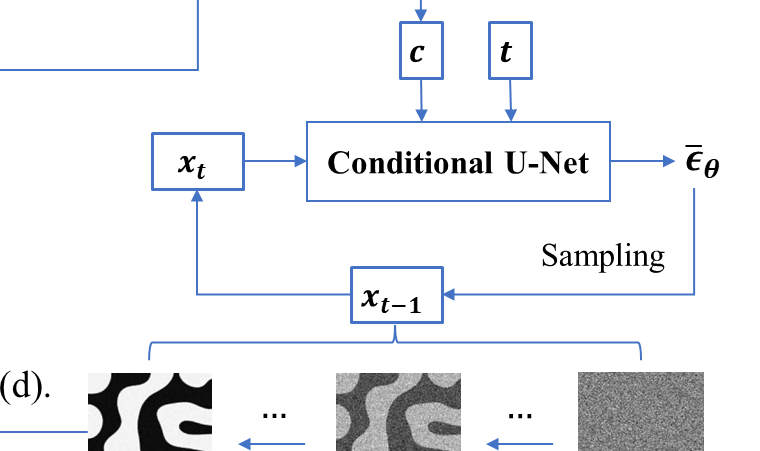
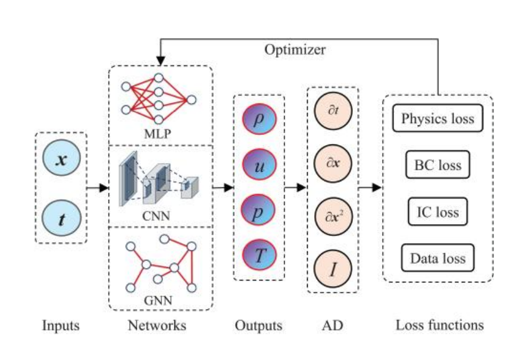
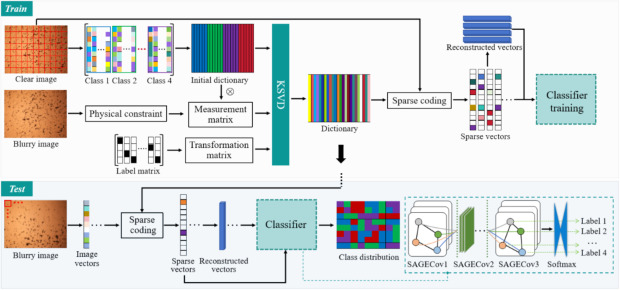
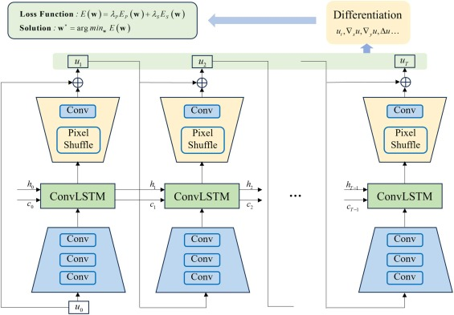
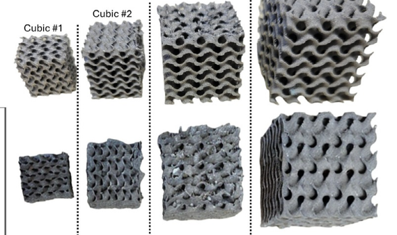
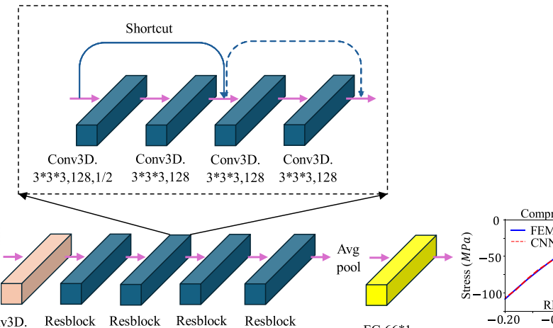
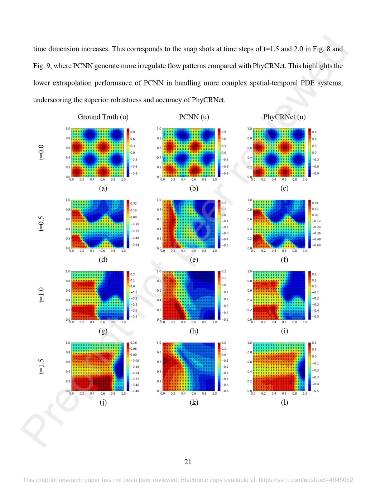
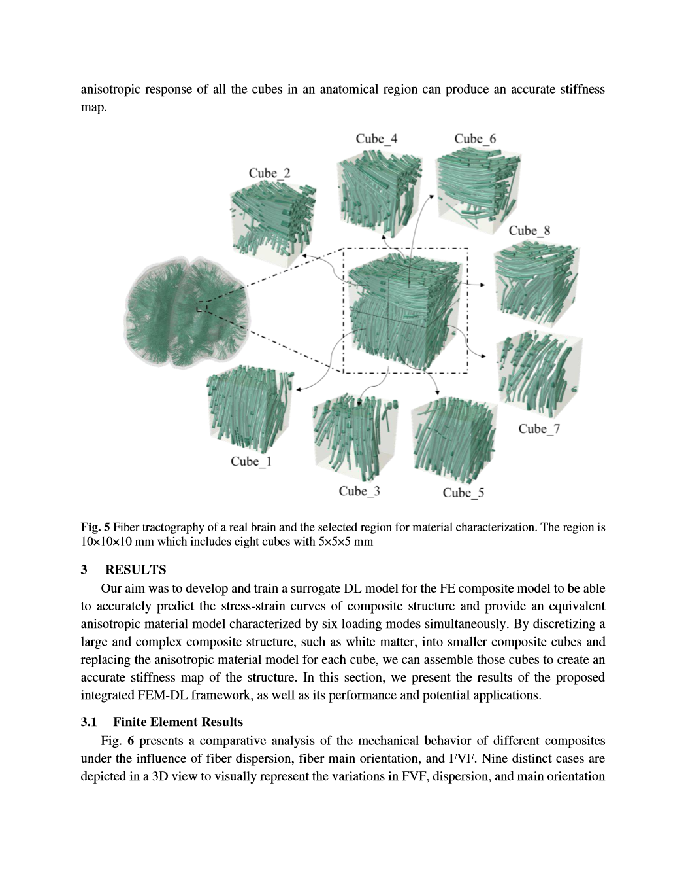

PhD Candidate in Mechanical Engineering
Current
Binghamton University, USA
AI for Science and EngineeringI am a Mechanical Engineering PhD candidate at Binghamton University, developing machine learning methods for engineering simulation and design. My core strength is combining hands-on expertise in simulation, finite element analysis, and physical modeling with scientific machine learning.
Beyond algorithm development, I build end-to-end engineering workflows: from raw simulation or experimental data and model development to physical validation and integration into engineering analysis and design. My work has produced peer-reviewed research across structures, materials, manufacturing, and fluid systems.
Core expertise
Current
Binghamton University, USA
AI for Science and Engineering2019 - 2022
South China University of Technology
Mechatronics and Sensing Laboratory2015 - 2019
Southwest Jiaotong University
Develop finite element and multiphysics models for structures, materials, manufacturing, and transport problems, including simulation setup, data generation, calibration, and validation.
Build surrogate models and neural operators for engineering field prediction under full-data, sparse-data, and physics-constrained settings.
Transform raw simulation and experimental data into validated ML solutions through data processing, model training, error analysis, physical verification, and engineering integration.
Geometry-aware neural operators for pressure and velocity prediction around irregular airfoils, including full-data, sparse-data, and physics-constrained training.
A physics-constrained Bayesian neural network for predicting grain evolution while quantifying model and prediction uncertainty.








Open to AI Engineer, Applied Scientist, Research Scientist, and Scientific ML opportunities.
 GitHub
GitHub Binghamton Email
Binghamton Email Scholar
Scholar